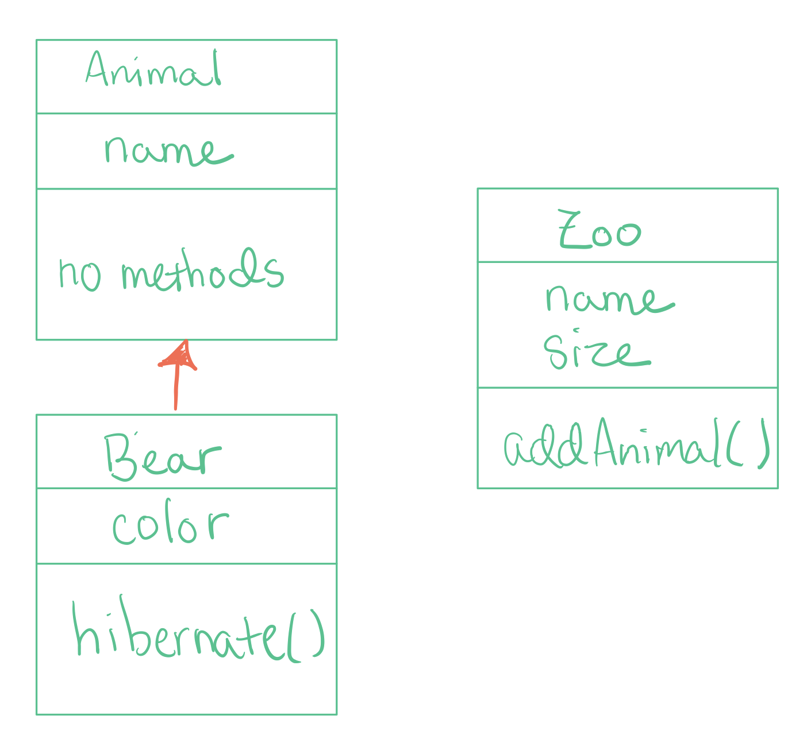

8.2. Keyword Extends¶
When you want to tell your computer that two classes are related, you must use the keyword extends in the class header of the subclass (child class), like so:
public class Child extends Parent{
// Body of class!
}
In order to better understand the use of this keyword, let’s examine an old AP exam question:
AP Exam Question
A bear is an animal and a zoo contains many animals, including bears. Three classes Animal, Bear, and Zoo are declared to represent animal, bear, and zoo objects. Which of the following is the most appropriate set of declarations?
I won’t show you the answer choices just yet! I want you to first think about how each of these classes may or may not be related to one another. In other words, which classes may benefit from borrowing the attributes, constructors and methods of another class?
When you want to know if one class should extend another, you should apply the “IS-A” test. Read the following sentences out loud to understand how this test works:
IS-A Test
An animal is a bear.
A bear is an animal.
Which sentence is correct given your understanding of the world? To me, the first sentence doesn’t make a ton of sense – an animal can be a bear but it could also be a lot of other things, like a parrot, monkey, or ostrich. The second sentence is perfect though! A bear is an animal. Period.
Need a rule to follow? Remember this! A superclass is more generic than its subclass, and a subclass is more specific than its superclass.
What about the Zoo class? Here, you gotta think about how these objects are related to one another in the real world. Do we need zoos to create animals on this planet? NO! Animals are born in the wild. Zoos are just constructs created by humans to contain animals; zoos have nothing to do with how animals come into existence.

Philosophy not your thing? That’s ok. Try the “IS-A” test.
IS-A Test
A zoo is an animal.
A zoo is a bear.
An animal is a zoo.
A bear is a zoo.
None of these sentences make sense! So there is no relationship between the Zoo class and the Animal and Bear classes.
If we were to illustrate the relationships between the Animal, Bear and Zoo class, we would draw an inheritance tree like so:
{kind=link}
How would you declare each of these classes in Java? Here are the answer choices you would see if you got this question on the AP exam:
{kind=link}
If you chose answer B, you’re right! Answer A is wrong because the Animal class does not extend the Bear class (it’s not a subclass of the Bear class as shown by the IS-A test). Answer C is wrong because the Animal class does not extend the Zoo class (the Zoo class is not a superclass of any other class in this program, as shown by the IS-A test). Answer D is wrong because the Bear class only extends the Animal class (the comma means that a subclass is inheriting from multiple classes, which is NOT ALLOWED IN JAVA. A subclass will only have one superclass above it). Answer E is wrong because the keyword “extends” is not used in the class header (don’t worry, we will learn more about “implements” in the future).